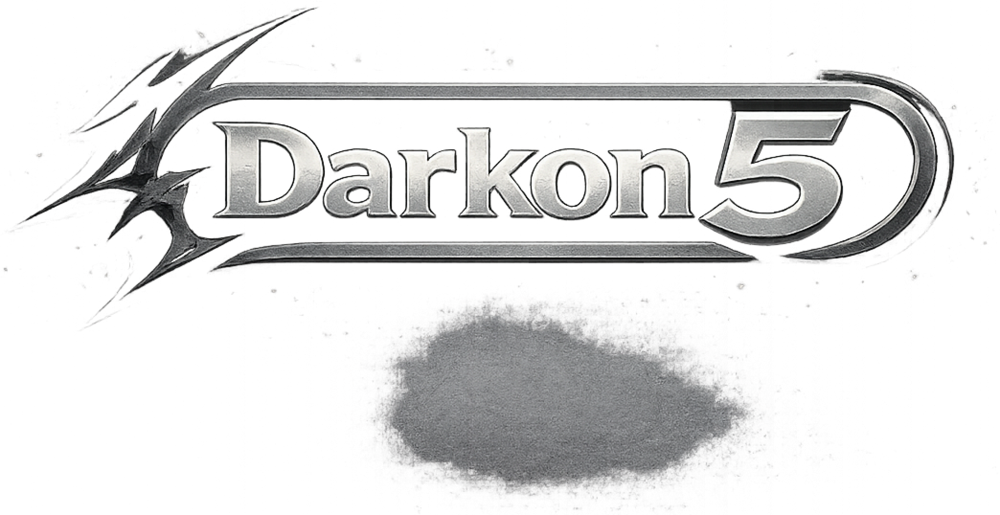

ALL ABOUT CLONED
Cloned is a 2D top-down horror puzzle adventure game where players explore a mysterious mansion filled with secrets, dangers, and strange creatures. As the protagonist Clare, players must uncover hidden clues, collect key items, and survive the horrors that lurk within while discovering the truth behind the mansion and their own identity.
Clare is the lone heroine of the game. She awakens trapped inside a laboratory with fragmented memories and must navigate a dark mansion while uncovering the truth behind her existence.
Production

Developers
Malinao, Lowell Jay - Game Director
Leonardo, Christ Jhunelle - Lead Programmer
Amigo, Granth Nikko - 2D artist
Idio, Vincent - 2D artist
Tagulao, Nathan - UI designer